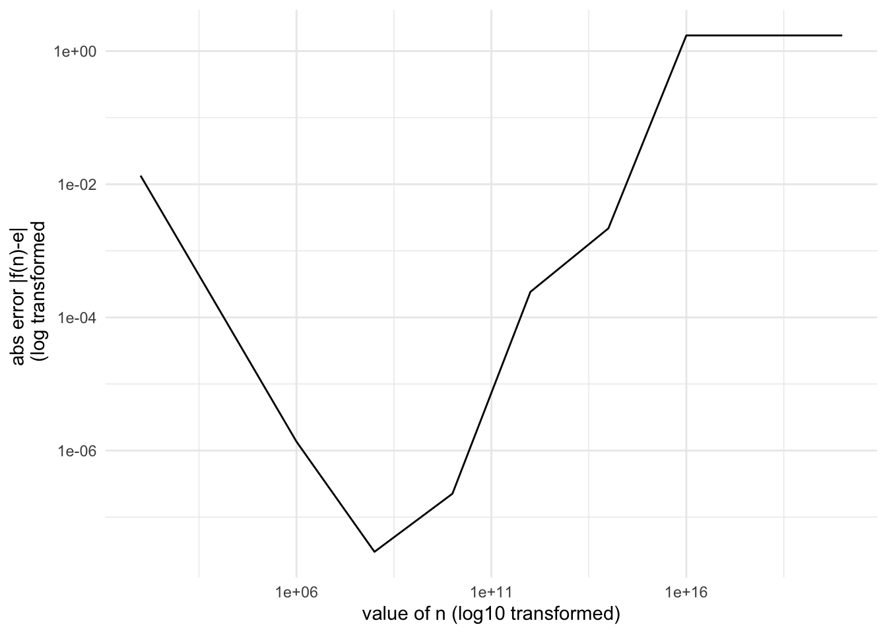

The following is the “notes” version of a talk I gave to useR Pittsburgh in August of 2019. I’d always been interesting in learning more about precision and figured giving a talk would help me learn about it. I definitely am not expert on this material (and I’d say that my grad school colleague Neil Spencer is much more an expert than I am). You can find the original slides (html) and notes (Rmd, html) imbedded in this sentence, and you’ll find that this document has been cleaned up a little for a more easy read.
Potential Titles
While procrastinating on this talk, I thought about all the potential titles. Below are are few (maybe they reflect what I think about this talk).
- “Computing: real numbers need not apply”
- “Floating-point-land: A
Romance of many bits” - “Floating points: When you think you’re a mathematician”
- “I wrote the tests correctly though!”
In the next few slides (sections) you’ll see 2 examples of reasons we, as statistians / data scientists, should care about understanding how a computer stores numerical values.
Motivation 1: Testing (raw floating point errors)
Suppose you’ve coded up a really good example showing your functions work amazingly and you’ve checked your math (with a quick print statement)
print(.1 + .2); print(.3)## [1] 0.3## [1] 0.3and you think “wow, I really like coding, and I’m like a good mathematician”, and then this happens…
.1 + .2 == .3## [1] FALSEAnd that’s when you go into pure mathematics cause no one likes computers anyway.
Technically here’s a correction if you encounter this (but we’ll talk about why you did soon):
testthat::expect_equal(.1 + .2, .3, tolerance = 0) # says something useful## Error: 0.1 + 0.2 not equal to 0.3.
## 1/1 mismatches
## [1] 0.3 - 0.3 == 5.55e-17testthat::expect_equal(.1 + .2, .3, tolerance = .Machine$double.eps)
# or
all.equal(.1 + .2, .3, tolerance = .Machine$double.eps)## [1] TRUEMotivation 2: Matrix Problems and Stability
Suppose you came back to your computer and given that you’re into Stats, you’ve coded up some iterative algorithm to solve some linear algebra stuffs (you know matrix multiplication, inversion etc).
Say you have some code that can solve \(Ax = b\) where
\[ A = \begin{bmatrix} .78 &.563 \\ .913 & .659 \end{bmatrix} \quad \quad b = \begin{bmatrix} .217 \\ .254 \end{bmatrix} \]
Now, as mathematicians we know that \(x = A^{-1}b\) (aka we have a closed form solution), but for this example, we will just use the fact that we know the answer mathematically and we’d like to assess preformance of our algorithm through tests.
So, the set up:
A <- matrix(c(.78, .563,
.913, .659),
byrow = T, nrow = 2)
b <- c(.217, .254)
x_true <- solve(a = A,b = b); x_true## [1] 1 -1That is, we know the true solution is \(\begin{bmatrix} 1 \\ -1 \end{bmatrix}\).
So you decide that you want your answer (from your function) to be close to solving the equation, that is \(A\hat{x} - b\) is really close to zero (say \(l_2\) norm < 1e-5). Note that, since we know the true solution (\(x\)), we will also be checking the relative error of the \(\hat{x}\) (your answer from your function), i.e. \[|x-\hat{x}|/|x|\]
The first function you write returns the following value for \(\hat{x}_1\):
x_hat1 <- c(.999,-.999)
res_1 <- b - A %*% x_hat1
res_1## [,1]
## [1,] 0.000217
## [2,] 0.000254sprintf("l_2 norm of residual is %.6f", norm(res_1))## [1] "l_2 norm of residual is 0.000471"norm(x_true - x_hat1, type = "2")/norm(x_true, type = "2") ## [1] 0.0009999999A friend says they think they have a function that solved the problem, and sends over \(\hat{x}_2\).
x_hat2 <- c(.341, -.087)
res_2 <- b - A %*% x_hat2
res_2## [,1]
## [1,] 1e-06
## [2,] 0e+00sprintf("l_2 norm of residual is %.6f", norm(res_2))## [1] "l_2 norm of residual is 0.000001"norm(x_true - x_hat2, type = "2")/norm(x_true, type = "2")## [1] 0.7961941Dang it…
Outline
The rest of this talk is broken up into the following sections
- R and floating points
- IEEE representation & underlying structure
- Understanding & Avoiding Errors (algebraic)
- Understanding & Avoiding Errors (linear algebra)
- Summary
Part I
Introduction to floating points
Introduction
print(.1 + .2); print(.3)## [1] 0.3## [1] 0.3.1 + .2 == .3## [1] FALSEWhat’s really happening?
What’s really happening?
\(0.1 + 0.2\):
## 0.1000000000000000055511151231257827021181583404541015625
## + 0.2000000000000000111022302462515654042363166809082031250
## ------------------------------------------------------------
## 0.3000000000000000444089209850062616169452667236328125000vs. \(0.3\):
## 0.2999999999999999888977697537484345957636833190917968750why is “\(.3\)” is printed?
#?print.default
getOption("digits") #7signif(.1 + .2, digits = 7)## [1] 0.3And above we were showing 55 significant digits is base 10… Technically we just used sprintf("%1.55f", .1) (see Rmd file).
IEEE 754 usage in R (finite storage)
R only has double precision floats
Which means the raw digit information is contained in “53 bits, and represents to that precision a range of absolute values from about
2e-308to2e+308” ~help(float)

I would recommend one watch the following video to understand how a value is actually stored - Example - from youtube (in only 32 bits - we use 64).
Express how to store: 263.3 in R (not going over).
int2bin <- function(x) {
R.utils::intToBin(x)
}
frac2bin <- function(x){
stringr::str_pad(R.utils::intToBin(x * 2^31), 31, pad="0")
}263 = 100000111
0.3 = 0100110011001100110011001100110
\(\Rightarrow\) 263.3 = 100000111.0100110011001100110011001100110
(get exp bits): 1.000001110100110011001100110011001100110 \(\times \; 2^8\)
tranform exp relative to ‘bias’ (below 1):
1023 + 8 = 1031(bit = 10000000111) note: ‘bias’ for IEEE 754 double = 1023grab fraction bits from part 3.
final answer:
## 1 12345678901 12345678901234567890123456789012345678901234567890123
## 0 10000000111 000001110100110011001100110011001100110...How can we think about this type of storage (with bits)
“a fundamental issue”: floating point number line is not dense
First, on the extreme end:
since we only have 53 bits to contain information, trying to express information that is has beyond 53 bits of information is truncated.
“can express 1/2 the integers after 2^53” (until 2^54… - then only 1/4, etc)
(2^53 + 0:12) - 2^53 ## [1] 0 0 2 4 4 4 6 8 8 8 10 12 12 9007199254740992 (2^53)
+ 5
------------------
9007199254740997 (exact result)
9007199254740996 (rounded to nearest representable float) 9007199254740992
+ 0.0001
-----------------------
9007199254740992.0001 (exact result)
9007199254740992 (rounded to nearest representable float)Example from Floating Point Demystified, Part 1)
Associating the storage with precision
- “The exponent bits tell you which power of two numbers you are between – \([2^{exponent}, 2^{exponent+1})\) – and the [fraction] tells you where you are in that range.” \(\sim\) Demystifying Floating Point Precision
- I.E., the exponent and fraction tells you about precision - the number of values that between those values is exactly have precise you can be.
Aside: What about the integers?
- “An numeric constant immediately followed by
Lis regarded as an integer number when possible” ~help(NumericConstants). But at the same time - we actually don’t store it as an integer (we still store it as a float – “we”
==R).1Lvs1
class(100L); class(100)## [1] "integer"## [1] "numeric"is.integer(1); is.integer(1:2)## [1] FALSE## [1] TRUEidentical(1,1L); 1 == 1L## [1] FALSE## [1] TRUEPart II
Understanding and Avoiding Errors (algebraic)
Overview
In this section I’ll give you some examples to showcase certain principles that should give you useful starting points
When calculating sample variance…
Be careful when you’re taking the difference of 2 number (that are large in absolute value), but their difference is relatively small
For example: calculation of sample variance1
They observe that if we use that trick we learning in stats class (i.e. calculate the \(\sum x_i^2\) and \(\sum x_i\) terms seperately we can run into problems).
\[\text{recall: } \quad S = \frac{1}{n-1} \left( \sum_i x_i^2 - \frac{1}{n} \left(\sum_i x_i\right)^2\right) = \frac{1}{n-1} \left( \sum_i \left(x_i - \frac{1}{n}\sum_j x_j \right)^2 \right)\]
x_sample <- c(50000000, 50000001, 50000002)
x_sum <- sum(x_sample); x2_sum <- sum(x_sample^2)
n <- length(x_sample)
1/(n-1) * (x2_sum - 1/n* (x_sum)^2) # "shortcut"## [1] 1.5var(x_sample) # calculated the better way (iterative updates actually)## [1] 1Relative error:
abs(1 - 1/(n-1) * (x2_sum - 1/n* (x_sum)^2))## [1] 0.5An extra slide for the math
Thinking about cancellation (that is \(a-b\)):
We can express the estimated value \(\hat{x}\) of the output value \(x\) for the subtraction between \(a\) and \(b\) in the following way. We have \(\hat{x} = \hat{a} - \hat{b}\) where \(\hat{a} = a(1-\Delta a)\), \(\hat{b} = b(1-\Delta b)\).
Then the relative error can be bounded above by
\[\bigg|\frac{x-\hat{x}}{x}\bigg| = \bigg|\frac{-a\Delta a + b \Delta b}{a - b} \bigg| \leq max(|\Delta a|, |\Delta b|) \frac{|a|+|b|}{|a-b|}\]
Higham, Nicholas J. Accuracy and stability of numerical algorithms. Vol. 80. Siam, 2002, pg 9
Notice how this is an upper bound for the error and includes the term \(\frac{|a|+|b|}{|a-b|}\). This implies that, “the relative error bound for \(\hat{x}\) is large when \(|a - b| << |a| + |b|\)” (subtractive cancelation can bring emphasis on early errors/ approximations)
See 10 digit rounding example on Higham, Nicholas J. Accuracy and stability of numerical algorithms. Vol. 80. Siam, 2002, pg 9 for a extreme example.
Take away 1:
- be careful with subtraction cancelation (expecially when \(|a - b| << |a| + |b|\))
Myth busting: (accumulation of errors will always be bad)
“Most often, instability is caused by just a few rounding errors” ~ Higham, Nicholas J. Accuracy and stability of numerical algorithms. Vol. 80. Siam, 2002, pg 9
Example:
\[ e := \underset{n \to \infty}{\text{lim}} (1+1/n)^n \]
f <- function(n) { (1 + 1/n)^n }
n <- 10^seq(2,20, by = 2)
Early take aways:
- be prepared to allow for some tolerance (
all.equal(tolerance = ...)) - if you spend enough time thinking about the floating point compression and the operations you could get a potentially good starting point. - be careful with subtraction cancelation (expecially when \(|a - b| << |a| + |b|\))
- instability is caused by just a few rounding errors
Part III
Understanding and Avoiding Errors (linear algebra)
Matrix multiplications (designing stable algorithms)
To understanding what’s going on in our matrix problems we need a few more concepts. They are related to the above and empahasize that stability of an algorithm is based on more the just truncation of true values (based on floating point representation)
Message: even if you know a mathmatical representation - look for stable algorithms instead of writing your own
General Stability Analysis
- backward and forward errors (perturbation theory)
- Condition number (tools:
kappa)
Stability in terms of backwards and forward errors

backward stable: \(y = f(x)\) is backward stable if, for any \(x\) with \(\hat{y}\) as it’s computed value, then \(\hat{y} = f(x + \Delta x)\) for some small \(\Delta x\).
backward-forward stable: similar but \(\hat{y} + \Delta y = f(x + \Delta x)\) for small \(\Delta y\), \(\Delta x\).

Higham, Nicholas J. Accuracy and stability of numerical algorithms. Vol. 80. Siam, 2002
Stability
condition number: relative change in the output for a given relative change in the input, and it is called the (relative) condition number of f.
a large condition number means an unstable algorithm (there are built-in tools to assess the condition number of object and functions)
Stability of a Matrix
Recalling the \(Ax = b\) problem:
\[ A = \begin{bmatrix} .78 &.563 \\ .913 & .659 \end{bmatrix} \quad \quad b = \begin{bmatrix} .217 \\ .254 \end{bmatrix} \]
Suppose we were going to use the built in solve function to calculate x. How stable would this approach be (in terms of condition number)?
# adding Error
E <- .001 * matrix(c(1,1,
1,-1),
byrow = T, nrow = 2)
A2 <- A + E
A2; A## [,1] [,2]
## [1,] 0.781 0.564
## [2,] 0.914 0.658## [,1] [,2]
## [1,] 0.780 0.563
## [2,] 0.913 0.659x_hat3 <- solve(a = A2,b = b)
x_hat3## [1] 0.29411765 -0.02252816# delta_y
rc_x <- norm(x_true - x_hat3, type = "2")/norm(x_true, type = "2"); rc_x## [1] 0.8525612# delta_x
rc_A <- norm(E, type = "2")/norm(A, type = "2"); rc_A## [1] 0.0009549354This seems pretty instable, and in R we have ways to that the matrix would lead to this type of thing
Condition Numbers for Matrices
kappa(): computes condition number (\(l_2\) norm). “The 2-norm condition number can be shown to be the ratio of the largest to the smallest non-zero singular value of the matrix.”
kappa(A) # remember large is bad## [1] 2482775kappa(diag(2))## [1] 1Why should you care? this should seem useful if you’re doing things like linear regression (if you code it up yourself or even if you don’t) - as a high kappa value means you have a matrix that is close to having zero eigenvalues (which could suggest that your matrix is almost “non-invertible”)
For lm, Chamber and Hastie2 say we should only worry when
.Machine$double.eps * kappa(A) # isn't super large ## [1] 5.512868e-10Random last slides: log probabilities
- Rstan “The basic purpose of a Stan program is to compute a log probability function and its derivatives.” (#bayesiancomputing)
- General reasoning for log probs example: Naive bayes on log probs
Naive Bayes
Imagine that you’re doing a naive bayes model for bag-of-word analysis (say the spam/not-spam example)
\[\begin{align*} H^{MAP} &= \underset{i \in \{spam, not-spam\}}{\text{argmax}} \left[\prod_{w=1}^W \mathbb{P}(\text{Freq}_w|H_i) \right] \mathbb{P}(H_i) \\ &= \underset{i \in \{spam, not-spam\}}{\text{argmax}} \left[\sum_{w=1}^W \text{log } \mathbb{P}(\text{Freq}_w|H_i) \right] + \text{log } \mathbb{P}(H_i) \end{align*}\](1/2)^1000## [1] 9.332636e-302Part IV
Summary
Designing Stable Algorithms
Try to avoid subtracting quantities contaminated by error (though such subtractions may be unavoidable) .
Minimize the size of intermediate quantities relative to the final solution.
Look for different formulations of a computation that are mathematically but not numerically equivalent. Don’t assume just because you know a mathematical expression that it’s going to be stable
It is advantageous to express update formulae as \[\text{new-value} = \text{old-value} + \text{small-correction}\] if the small correction can be computed with many correct significant figures. Natural examples: Netwon’s method, some ODEs
Use only well-conditioned transformations of the problem. (associated with number 3)
Take precautions to avoid unnecessary overflow and underflow (log prob)
From: Higham, Nicholas J. Accuracy and stability of numerical algorithms. Vol. 80. Siam, 2002.
Algorithms for Computing the Sample Variance: Analysis and Recommendations)↩
Chambers, John M., and Trevor J. Hastie, eds. Statistical models in S. Vol. 251. Pacific Grove, CA: Wadsworth & Brooks/Cole Advanced Books & Software, 1992.↩